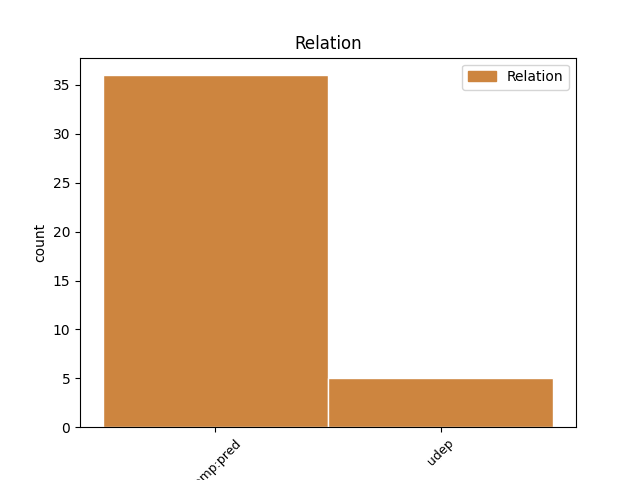
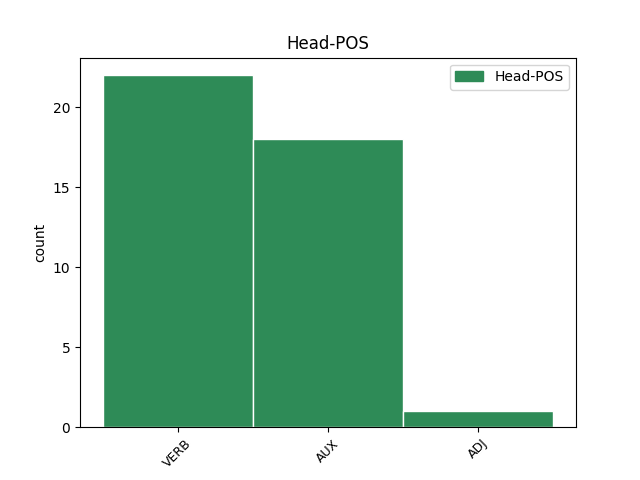
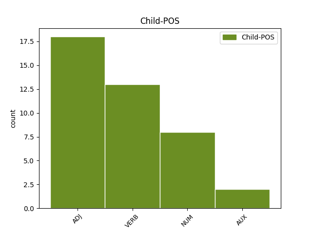

Distribution of features within this leaf



Agreement Rules sorted by frequency.
- When the dependent token is the predicative complements(comp:pred) of the head token, and the head token is AUX and the dependent token is ADJ.
1 аще _ _ _ _ 0 _ _ _
2 бисте _ _ _ _ 0 _ _ _
3 слѣпи слѣпъ ADJ A- Case=Nom|Degree=Pos|Gender=Masc|Number=Plur|Strength=Strong 4 comp:pred _ ref=JOHN_9.41
4 бꙑли бꙑти AUX V- Aspect=Res|Case=Nom|Gender=Masc|Number=Plur|Strength=Strong|VerbForm=Part|Voice=Act 0 _ _ _
5 не _ _ _ _ 0 _ _ _
6 бисте _ _ _ _ 0 _ _ _
7 имѣли _ _ _ _ 0 _ _ _
8 грѣха _ _ _ _ 0 _ _ _
1 въпрошенъ въпросити VERB V- Case=Nom|Gender=Masc|Number=Sing|Strength=Strong|Tense=Past|VerbForm=Part|Voice=Pass 3 comp:pred _ ref=LUKE_17.20
2 же _ _ _ _ 0 _ _ _
3 бꙑвъ бꙑти AUX V- Case=Nom|Gender=Masc|Number=Sing|Strength=Strong|Tense=Past|VerbForm=Part|Voice=Act 0 _ _ _
4 отъ _ _ _ _ 0 _ _ _
5 фарисѣи _ _ _ _ 0 _ _ _
6 когда _ _ _ _ 0 _ _ _
7 придетъ _ _ _ _ 0 _ _ _
8 ц҃срствие _ _ _ _ 0 _ _ _
9 б҃жие _ _ _ _ 0 _ _ _
10 отъвѣшта _ _ _ _ 0 _ _ _
11 имъ _ _ _ _ 0 _ _ _
12 и _ _ _ _ 0 _ _ _
13 рече _ _ _ _ 0 _ _ _
1 Г҃ла _ _ _ _ 0 _ _ _
2 къ _ _ _ _ 0 _ _ _
3 нимъ _ _ _ _ 0 _ _ _
4 никодимъ _ _ _ _ 0 _ _ _
5 пришедꙑ _ _ _ _ 0 _ _ _
6 къ _ _ _ _ 0 _ _ _
7 немоу _ _ _ _ 0 _ _ _
8 ноштиѭ҄ _ _ _ _ 0 _ _ _
9 единъ ѥдинъ NUM Ma Case=Nom|Gender=Masc|Number=Sing 10 comp:pred _ ref=JOHN_7.50
10 сꙑ бꙑти AUX V- Case=Nom|Gender=Masc|Number=Sing|Strength=Strong|Tense=Pres|VerbForm=Part|Voice=Act 0 _ _ _
11 отъ _ _ _ _ 0 _ _ _
12 нихъ _ _ _ _ 0 _ _ _
1 ꙇ _ _ _ _ 0 _ _ _
2 егда _ _ _ _ 0 _ _ _
3 придѫ _ _ _ _ 0 _ _ _
4 на _ _ _ _ 0 _ _ _
5 мѣсто _ _ _ _ 0 _ _ _
6 нарицаемое нарицати VERB V- Case=Acc|Gender=Neut|Number=Sing|Strength=Weak|Tense=Pres|VerbForm=Part|Voice=Pass 0 _ _ _
7 краниево краниѥвъ ADJ A- Case=Acc|Degree=Pos|Gender=Neut|Number=Sing|Strength=Strong 6 comp:pred _ ref=LUKE_23.33
8 тоу _ _ _ _ 0 _ _ _
9 пропѧсѧ _ _ _ _ 0 _ _ _
10 и _ _ _ _ 0 _ _ _
11 ꙇ _ _ _ _ 0 _ _ _
12 зълодѣа _ _ _ _ 0 _ _ _
13 ового _ _ _ _ 0 _ _ _
14 оубо _ _ _ _ 0 _ _ _
15 о _ _ _ _ 0 _ _ _
16 деснѫѭ _ _ _ _ 0 _ _ _
17 а _ _ _ _ 0 _ _ _
18 дроугааго _ _ _ _ 0 _ _ _
19 о _ _ _ _ 0 _ _ _
20 шѫѭѫ _ _ _ _ 0 _ _ _
1 Петръ _ _ _ _ 0 _ _ _
2 же _ _ _ _ 0 _ _ _
3 въставъ _ _ _ _ 0 _ _ _
4 тече _ _ _ _ 0 _ _ _
5 къ _ _ _ _ 0 _ _ _
6 гробоу _ _ _ _ 0 _ _ _
7 ꙇ _ _ _ _ 0 _ _ _
8 приникъ _ _ _ _ 0 _ _ _
9 видѣ _ _ _ _ 0 _ _ _
10 ризꙑ _ _ _ _ 0 _ _ _
11 единꙑ ѥдинъ NUM Ma Case=Acc|Gender=Fem,Masc|Number=Plur 12 comp:pred _ ref=LUKE_24.12
12 лежѧштѧ лежати VERB V- Case=Acc|Gender=Fem|Number=Plur|Strength=Strong|Tense=Pres|VerbForm=Part|Voice=Act 0 _ _ _
13 ꙇ _ _ _ _ 0 _ _ _
14 иде _ _ _ _ 0 _ _ _
15 вь _ _ _ _ 0 _ _ _
16 себѣ _ _ _ _ 0 _ _ _
17 дивѧ _ _ _ _ 0 _ _ _
18 сѧ _ _ _ _ 0 _ _ _
19 бꙑвъшюмоу _ _ _ _ 0 _ _ _
Disagree Examples:
1 ꙇ _ _ _ _ 0 _ _ _
2 пришедъ _ _ _ _ 0 _ _ _
3 и҃съ _ _ _ _ 0 _ _ _
4 въ _ _ _ _ 0 _ _ _
5 домъ _ _ _ _ 0 _ _ _
6 кънѧжь _ _ _ _ 0 _ _ _
7 ꙇ _ _ _ _ 0 _ _ _
8 видѣвъ видѣти VERB V- Case=Nom|Gender=Masc|Number=Sing|Strength=Strong|Tense=Past|VerbForm=Part|Voice=Act 0 _ _ _
9 сопьцѧ _ _ _ _ 0 _ _ _
10 и _ _ _ _ 0 _ _ _
11 народъ _ _ _ _ 0 _ _ _
12 млъвѧщъ млъвити VERB V- Case=Acc|Gender=Masc|Number=Sing|Strength=Strong|Tense=Pres|VerbForm=Part|Voice=Act 8 comp:pred _ ref=MATT_9.23
13 г҃ла _ _ _ _ 0 _ _ _
14 имъ _ _ _ _ 0 _ _ _
1 ꙇ _ _ _ _ 0 _ _ _
2 видѣвъше видѣти VERB V- Case=Nom|Gender=Masc|Number=Plur|Strength=Strong|Tense=Past|VerbForm=Part|Voice=Act 0 _ _ _
3 и _ _ _ _ 0 _ _ _
4 оученици _ _ _ _ 0 _ _ _
5 ходѧштъ ходити VERB V- Case=Acc|Gender=Masc|Number=Sing|Strength=Strong|Tense=Pres|VerbForm=Part|Voice=Act 2 comp:pred _ ref=MATT_14.26
6 по _ _ _ _ 0 _ _ _
7 морю _ _ _ _ 0 _ _ _
8 съмѧшѧ _ _ _ _ 0 _ _ _
9 сѧ _ _ _ _ 0 _ _ _
10 г҃лѭште _ _ _ _ 0 _ _ _
11 ѣко _ _ _ _ 0 _ _ _
12 призракъ _ _ _ _ 0 _ _ _
13 естъ _ _ _ _ 0 _ _ _
1 и _ _ _ _ 0 _ _ _
2 исцѣли _ _ _ _ 0 _ _ _
3 ѩ _ _ _ _ 0 _ _ _
4 ѣко _ _ _ _ 0 _ _ _
5 народоу _ _ _ _ 0 _ _ _
6 дивити _ _ _ _ 0 _ _ _
7 сѧ _ _ _ _ 0 _ _ _
8 видѧще видѣти VERB V- Case=Nom|Gender=Masc|Number=Plur|Strength=Strong|Tense=Pres|VerbForm=Part|Voice=Act 0 _ _ _
9 нѣмꙑ _ _ _ _ 0 _ _ _
10 г҃лѭштѧ глаголати VERB V- Case=Acc|Gender=Fem,Masc|Number=Plur|Strength=Strong|Tense=Pres|VerbForm=Part|Voice=Act 8 comp:pred _ ref=MATT_15.31
11 бѣдънꙑѩ _ _ _ _ 0 _ _ _
12 съдравꙑ _ _ _ _ 0 _ _ _
13 ꙇ _ _ _ _ 0 _ _ _
14 хромꙑѩ _ _ _ _ 0 _ _ _
15 ходѧштѧ _ _ _ _ 0 _ _ _
16 слѣпꙑѩ _ _ _ _ 0 _ _ _
17 видѧштѧ _ _ _ _ 0 _ _ _
1 Тогда _ _ _ _ 0 _ _ _
2 пристѫпьше пристѫпити VERB V- Case=Nom|Gender=Masc|Number=Plur|Strength=Strong|Tense=Past|VerbForm=Part|Voice=Act 0 _ _ _
3 оученици _ _ _ _ 0 _ _ _
4 и҃сви _ _ _ _ 0 _ _ _
5 единомоу ѥдинъ NUM Ma Case=Dat|Gender=Masc|Number=Sing 2 comp:pred _ ref=MATT_17.19
6 рѣшѧ _ _ _ _ 0 _ _ _
1 како _ _ _ _ 0 _ _ _
2 сьѩ _ _ _ _ 0 _ _ _
3 послѣдьнѧѩ _ _ _ _ 0 _ _ _
4 единъ _ _ _ _ 0 _ _ _
5 часъ _ _ _ _ 0 _ _ _
6 сътворьшѧ _ _ _ _ 0 _ _ _
7 ꙇ _ _ _ _ 0 _ _ _
8 равънꙑ равьнъ ADJ A- Case=Acc|Degree=Pos|Gender=Fem,Masc|Number=Plur|Strength=Strong 10 comp:pred _ ref=MATT_20.12
9 намъ _ _ _ _ 0 _ _ _
10 сътворилъ сътворити VERB V- Aspect=Res|Case=Nom|Gender=Masc|Number=Sing|Strength=Strong|VerbForm=Part|Voice=Act 0 _ _ _
11 ѩ _ _ _ _ 0 _ _ _
12 еси _ _ _ _ 0 _ _ _
13 понесъшеимъ _ _ _ _ 0 _ _ _
14 тѧготѫ _ _ _ _ 0 _ _ _
15 дьне _ _ _ _ 0 _ _ _
16 и _ _ _ _ 0 _ _ _
17 варъ _ _ _ _ 0 _ _ _